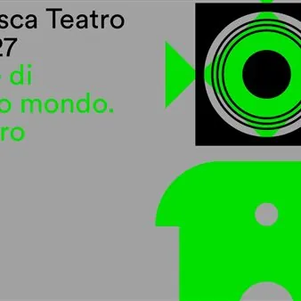

da gio 29 ott a ven 16 apr
Gradisca Teatro 26 - 27
Nuova stagione artistica presso il Nuovo Teatro Comunale in via M. Ciotti 1. Spettacoli a pagamento.
 Indicazioni
Indicazioni
- Costi e prenotazioni
- Costo non indicato · Prenotazione non indicata
- Programma
- Programma da verificare. Apri la fonte ufficiale per orari e possibili aggiornamenti.
- In caso di maltempo
- Nessuna indicazione specifica pubblicata.
- Note
- Acquisito automaticamente dalla fonte.
L’EVENTO
Descrizione completa
inizio rappresentazioni > h 21
Gradisca > Nuovo Teatro Comunale > 26/27 01 > giovedì 29 ottobre 2026
OCIO ALLA DEBEGNAC!
testo e regia Davide Calabrese
con Ariella Reggio , Daniela Vidali , Marzia Postogna , Maurizio Repetto , Francesco Godina , Anselmo Luisi , Enza De Rose
In una casa sospesa tra il bosco sloveno e l’aldilà, due donne dal carattere opposto sono costrette a convivere. Tra battute affilate, situazioni surreali e una scommessa sempre più estrema, la nuova commedia di Davide Calabrese racconta con ironia le nostre fragilità. 02 > giovedì 12 novembre 2026
LA LOCANDIERA
A long play
da Carlo Goldoni
ideazione e regia Paolo Bignamini
concerto teatrale con Mille e La Scapigniatura
E se Mirandolina si fosse davvero innamorata del cavaliere che seduce per sfida? La locandiera – A long play rilegge il capolavoro di Goldoni intrecciandolo alle grandi canzoni d’amore della tradizione cantautorale italiana, rivisitate in chiave contemporanea. 03 > mercoledì 02 dicembre 2026
MARCINELLE
Storia di minatori
testo e regia Ariele Vincenti
con Francesco Cassibba , Sarah Nicolucci , Giacomo Rasetti , Vincenzo Tosetto , Ariele Vincenti
Marcinelle racconta il viaggio e il destino di quattro minatori italiani, dalla partenza con le valigie di cartone fino alla tragedia dell’8 agosto 1956. Un intenso racconto teatrale che restituisce voce, dignità e memoria a una delle pagine più dolorose dell’emigrazione italiana. 04 > lunedì 21 dicembre 2026
GOSPEL SOUNDS and CHRISTMAS SONGS
John Lakin & friends
Direttamente dal South Carolina, John Lakin & Friends porta sul palco tutta l’energia del gospel tradizionale e contemporaneo. Un concerto coinvolgente, fatto di armonie travolgenti, emozioni autentiche e una musica capace di unire e parlare a ogni generazione. 05 > giovedì 14 gennaio 2027
L’ATTRICE
testo e regia Giacomo Battiato
con Cristiana Capotondi
e con Anna Zaneva e Marco Quaglia
Dalla nascita in una stalla veneta ai trionfi sui palcoscenici, la straordinaria vita di Angelica Pavan si intreccia alla storia del Risorgimento italiano. Ispirato a eventi e personaggi reali, L’attrice è un intenso omaggio al teatro e alle donne che hanno saputo sfidare il proprio tempo. 06 > lunedì 8 febbraio 2027
UNO, NESSUNO, CENTOMILA
di Luigi Pirandello
adattamento e regia Nicasio Anzelmo
con Primo Reggiani, Francesca Valtorta, Jane Alexander, Fabrizio Bordignon, Enrico Ottaviano
Un dettaglio all’apparenza insignificante sconvolge la vita di Vitangelo Moscarda, spingendolo a mettere in discussione ogni certezza. Il capolavoro di Pirandello, ironico e denso di enigmi, racconta con sorprendente modernità la ricerca di sé. 07 > giovedì 25 febbraio 2027
LA LETTERA
ideato da Nullo Facchini e Paolo Nani
regia Nullo Facchini
con Paolo Nani
Da oltre trent’anni La lettera conquista il pubblico di tutto il mondo con un’idea tanto semplice quanto geniale. Solo in scena, con un tavolo e una valigia di oggetti, Paolo Nani dà vita a quindici irresistibili variazioni della stessa storia. Un’esilarante macchina di comicità. 08 > mercoledì 17 marzo 2027
LA VITA È BELLA? NO, È UN TIPO
Ragionamento semiserio sulla felicità ai nostri tempi
di e con Paola Minaccioni
scritto con Andrea Lolli e la collaborazione di Lorenzo De Marinis
regia Paola Minaccioni
Un ironico e irresistibile invito a liberarsi dai modelli di felicità imposti. Un inno ai difetti, alle irregolarità e alle peculiarità che ci ricorda come siano proprio le nostre imperfezioni a renderci speciali. 09 > martedì 30 marzo 2027
CONTRAZIONI PERICOLOSE
testo e regia Gabriele Pignotta
con Rocío Muñoz Morales , Giorgio Lupano , Gabriele Pignotta
In un reparto di ginecologia, una donna in procinto di partorire è accompagnata da un uomo che non è suo marito, né il compagno, ma un amico speciale. Una commedia brillante che, tra equivoci, risate e colpi di scena, celebra con ironia la forza dell’amicizia e dell’amore. 10 > venerdì 16 aprile 2027
DRACULA
A COMEDY OF TERRORS
di Gordon Greeberg & Steve Rosen
traduzione Enrico Luttmann
regia Leonardo Buttaroni
con Alessandro di Somma, Ermenegildo Marciante, Diego Migeni, Yaser Mohamed, Marco Zordan
Cinque attori si moltiplicano in scena interpretando oltre una dozzina di personaggi del romanzo di Bram Stoker, in un vortice di travestimenti, cambi repentini e continue trasformazioni. Un carosello teatrale ad altissimo ritmo in cui la paura lascia spazio all’ilarità. BIGLIETTI Presso la biglietteria dal Teatro . da martedì 29 settembre a sabato 03 ottobre:
tutti i giorni > dalle ore 17 alle ore 19
sabato > anche dalle ore 10.30 alle ore 12.30 . da martedì 06 ottobre 2026 a fine Stagione:
ogni martedì > dalle ore 17 alle ore 19
ogni sabato > dalle ore 10.30 alle ore 12.30 . la biglietteria apre anche un’ora prima di ogni rappresentazione serale e pomeridiana BIGLIETTERIA ONLINE
. da martedì 29 settembre 2026 > dalle ore 12
artistiassociatigorizia.it / bigliettoveloce.it BIGLIETTI
Ocio alla Debegnac > La locandiera > Marcinelle > Gospel Sound > L’attrice > Uno, nessuno, centomila > La lettera > La vita è bella? No, è un tipo > Contrazioni pericolose > Dracula PLATEA
Intero € 24,00
Ridotto* € 21,00
Unitrè Cormons € 19,00
Under 26 € 17,00 PRIMA GALLERIA
Intero € 21,00
Ridotto* € 19,00
Unitrè Cormons € 17,00
Under 26 € 15,00 SECONDA GALLERIA
Intero € 19,00
Ridotto* € 17,00
Unitrè Cormons € 15,00
Under 26 € 12,00 *over65, abbonati alla Stagione 26/27 del Teatro Comunale di Cormons, Soci Coop Alleanza 3.0, Amici èStoria 26/27 (limitatamente ai posti a disposizione dell’offerta e presentando la tessera al momento dell’acquisto).
IL PROGRAMMA
Programma e orari
Appuntamenti raccolti dalle fonti elencate. Dove manca un orario, non è ancora disponibile in questa scheda.
Programma pubblicato
- Dal 2026-10-29 al 2027-04-16
INFORMAZIONI UTILI
Prima di partire
- Controllare la fonte prima di partire.
ORGANIZZAZIONE